Built around real tasks
Each app focuses on a practical job, from packaging Python apps to cleaning audio or planning trades.
Official Microsoft Store publisher portfolio
Aria Vision provides practical Windows apps for productivity, development, media, trading, automation, utilities, education, and security workflows.

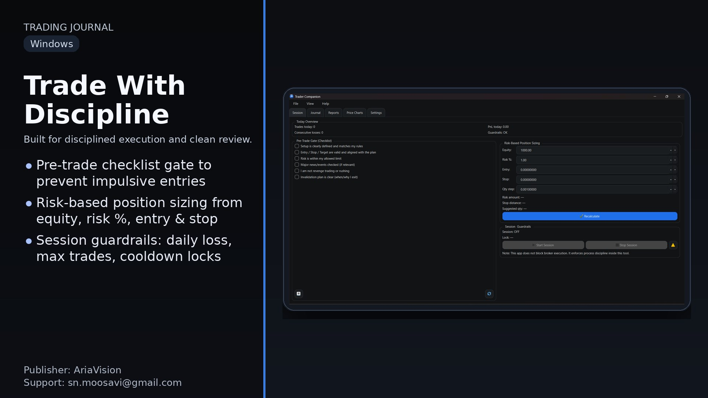

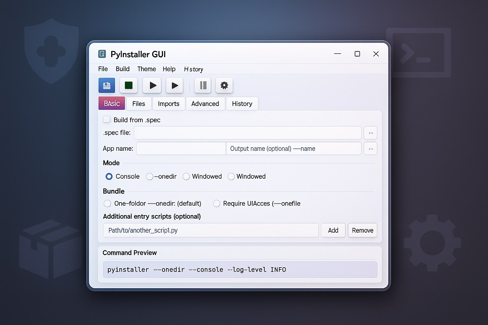

Explore official Aria Vision apps with screenshots, clear use cases, related tools, and direct Microsoft Store links.
Built for modern Windows users
Each app focuses on a practical job, from packaging Python apps to cleaning audio or planning trades.
Product pages show screenshots, key features, FAQs, and related apps so users can quickly judge fit.
Every app links to its Microsoft Store listing for a familiar Windows install experience.
Product catalog
Browse official Aria Vision Windows apps by workflow, with direct Microsoft Store links, screenshots, FAQs, and related tools for quick evaluation.
Turn every trade into a measurable process with planning checklists, risk controls, screenshots, and performance reports built for disciplined traders.
Convert XML files into readable JSON with a focused Windows interface for developers, analysts, and users who handle structured data.
Package Python scripts into Windows executables with build profiles, live command preview, diagnostics, and release-focused PyInstaller controls.
Improve music, voice, and media audio with enhancement presets, clarity controls, volume boost, before-and-after preview, and local export.
Create AI character images from prompts with a visual Windows workspace for concept art, creative ideas, portraits, and style exploration.
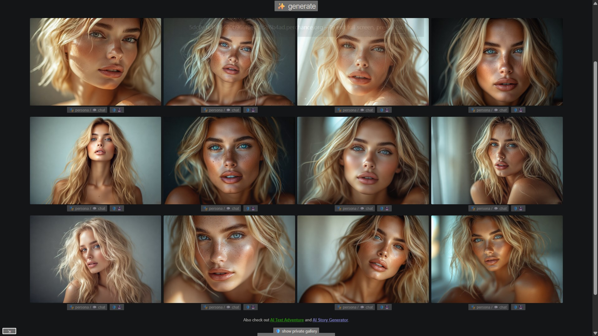
Remove image backgrounds with local AI processing, transparent PNG export, batch mode, alpha matting, and background replacement tools.

Plan focused work sessions with Pomodoro timers, reusable time-blocking plans, daily goals, custom alerts, and a floating Mini HUD.
Transcribe audio and video into editable text, subtitles, translations, and export-ready document packs from a practical Windows workflow.
Manage Git and GitHub tasks from a secure Windows desktop app with commits, branches, pull requests, issues, dry runs, and activity logs.
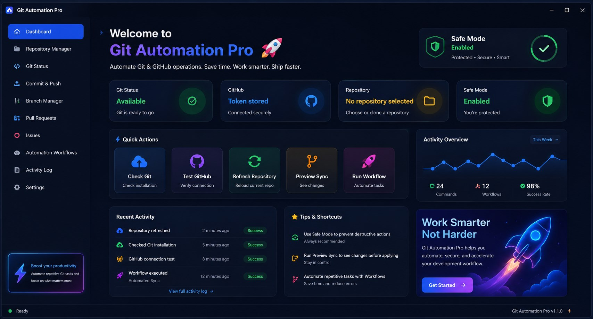
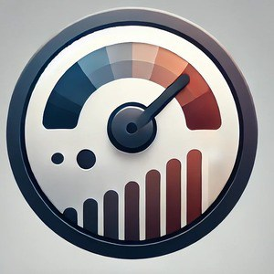
Developer toolsMonitor live network activity on Windows with download and upload speed, connection status, traffic totals, and practical performance readings.
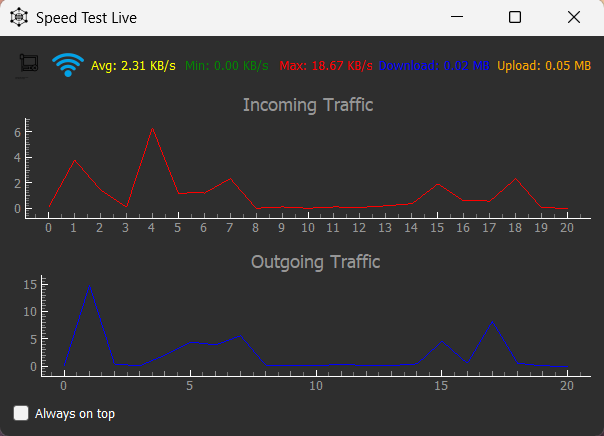
Automate SVN commits from the Windows tray with working-copy detection, today-only changes, TortoiseSVN support, and one-click updates.
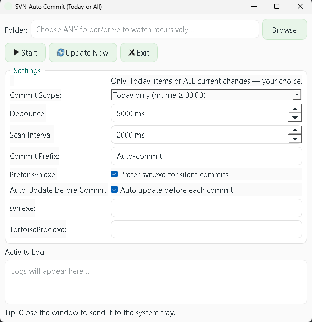
Convert images to Base64 and Base64 back to images with preview, save options, and a simple workflow for developers and image data tasks.
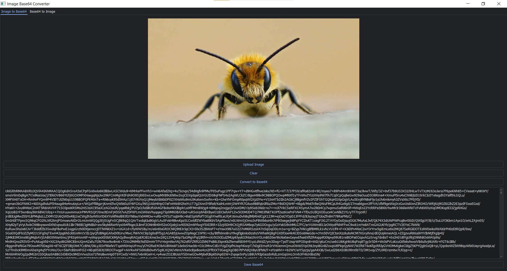
Hide sensitive text inside images with a focused Windows utility for private message encoding and simple image-based sharing workflows.
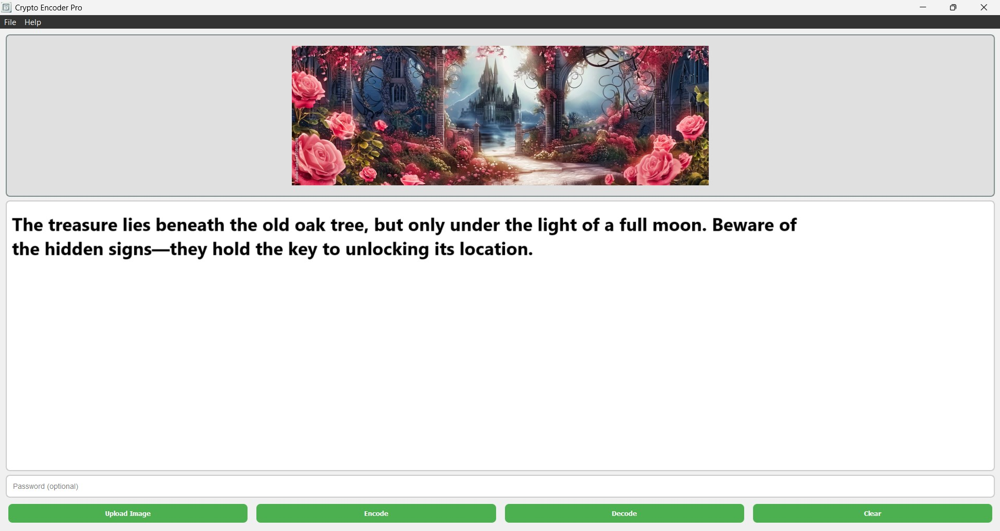
Manage passwords and manual OTP workflows faster with a secure offline Windows credential vault designed for local storage.

Analyze charts, manage watchlists, plan risk, and organize trading ideas in a professional Windows workspace for market review.
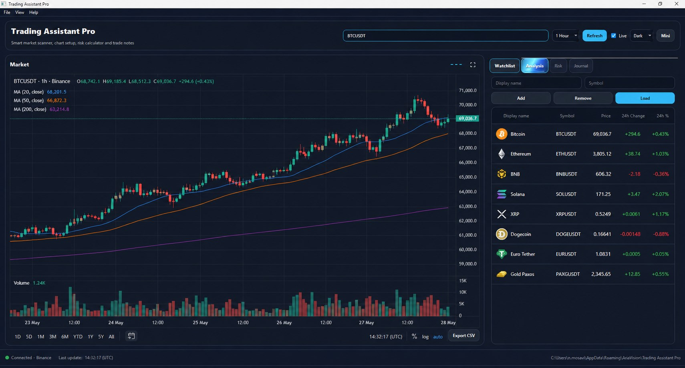
Keep copied text, images, media, PDFs, and files organized in a Windows clipboard manager that makes reused content easy to find and paste.
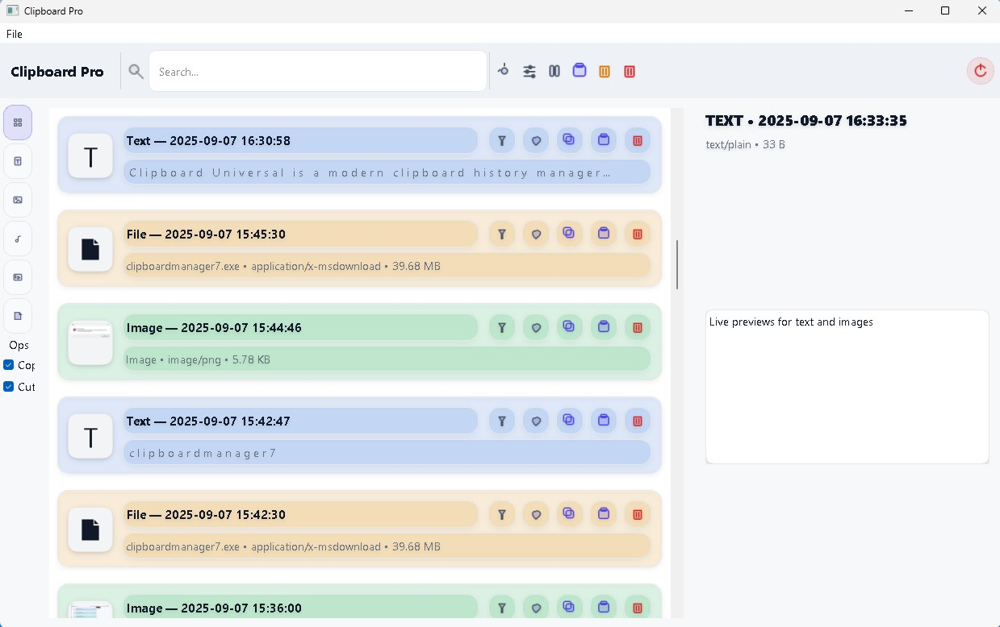
Clean voice and music recordings offline with smart presets, A/B preview, batch export, hum removal, and WAV, MP3, or FLAC output.

Install Python packages through a clean pip GUI with live logs, smart suggestions, version selection, command preview, and advanced flags.
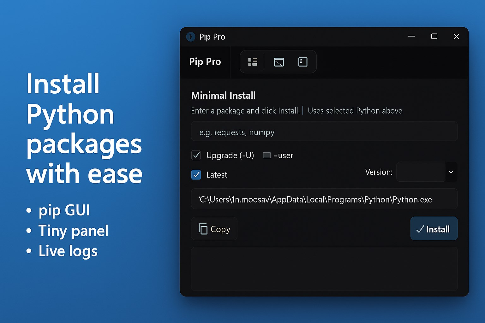
Turn any image into a polished puzzle experience with image import, web search, guide overlay, adjustable difficulty, and smooth solving animation.
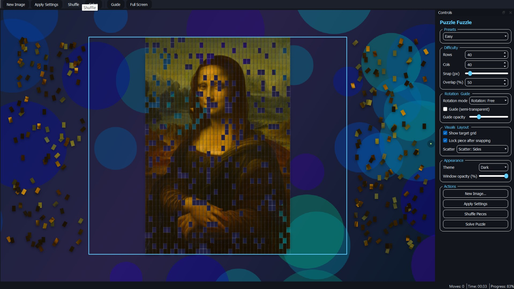
Design custom QR codes with colors, backgrounds, graphics, size controls, and brightness adjustments for business, branding, and personal use.

Manage, edit, and test Oracle Net TNS names on Windows with a focused desktop tool for DBAs, developers, and database support teams.

Convert Markdown documents into clean HTML with a simple Windows tool for writers, developers, documentation teams, and web content workflows.
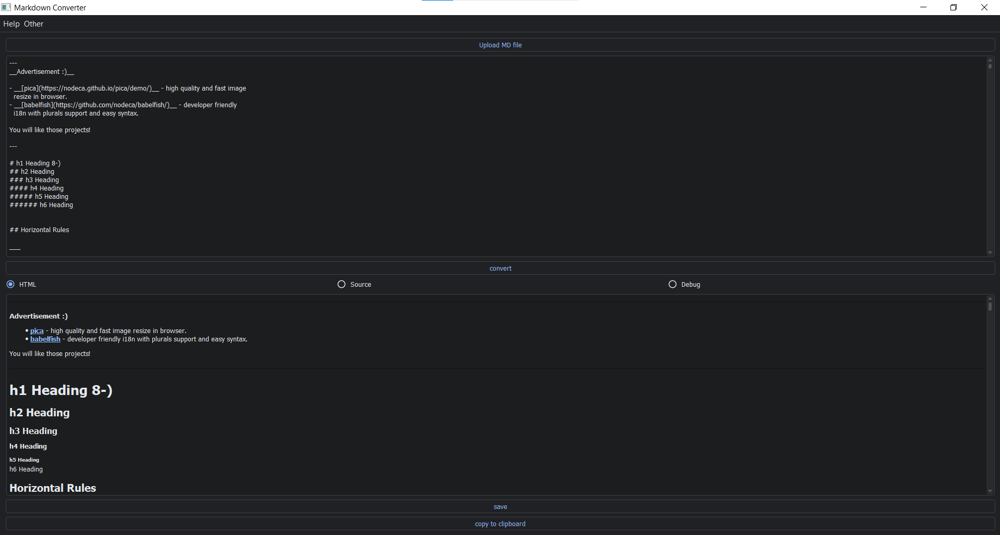
Inspect, format, search, sort, minify, compare, and export JSON with dual code/tree views, JSONPath search, CSV export, and file diff.
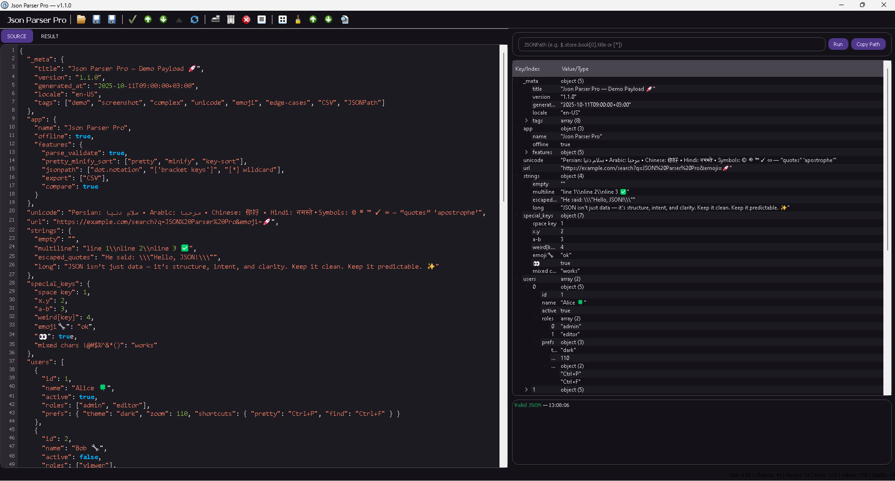
Manage downloads with a focused Windows download manager built for speed, reliability, file control, and everyday organization.

Design professional email signatures for Outlook, Gmail, and other clients with a visual Windows builder for polished contact details.
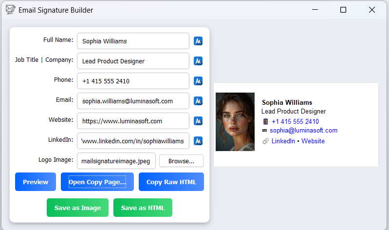
Tune Windows gaming sessions with one-click optimization, smart profiles, live overlay stats, auto-restore, and practical system controls.

Visualize chemical structures in 3D on Windows with a focused viewer for students, educators, researchers, and chemistry learners.

Download videos, playlists, and MP3 audio with quality selection, 4K support, batch downloads, Private Mode, and a clean ad-free workflow.
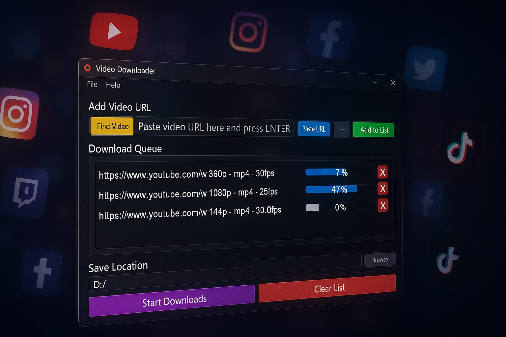
Generate, edit, style, export, and burn subtitles into video with local faster-whisper transcription and a precise Windows editing workflow.
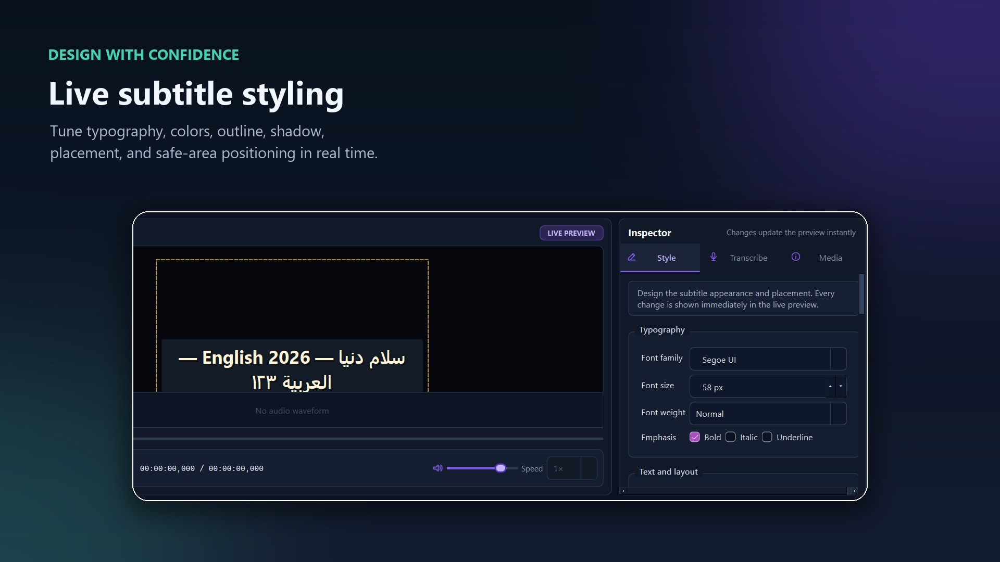
Compress videos, reduce file size, convert formats, and prepare media for sharing with simple presets or advanced codec controls.

Automate file backups on Windows with customizable settings that help protect important folders and make routine backup work easier.
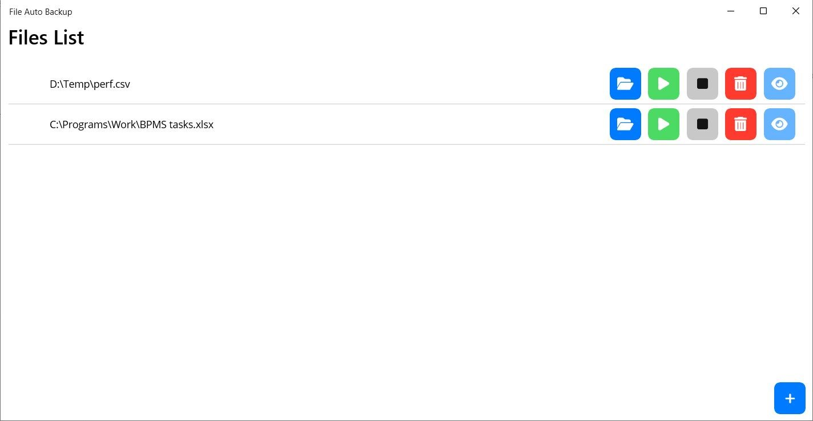
Download YouTube media through a simple Windows workflow with a focused interface for saving videos or music from supported links.
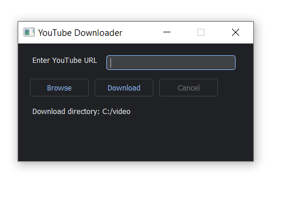
No apps match the current search.
About Aria Vision
Aria Vision publishes practical Windows applications for productivity, development, automation, media, trading, utilities, education, and security workflows.
The goal is simple: ship focused desktop tools that solve clear problems, feel polished in daily use, and are easy to discover through the Microsoft Store.
Contact
Use the publisher email for support, product questions, collaboration, and commercial inquiries.
Privacy and trust
Each app page includes direct Microsoft Store access, available privacy resources, screenshots, features, and support links where provided.
Aria Vision keeps the catalog clear and product-focused so users can compare tools and choose with confidence.